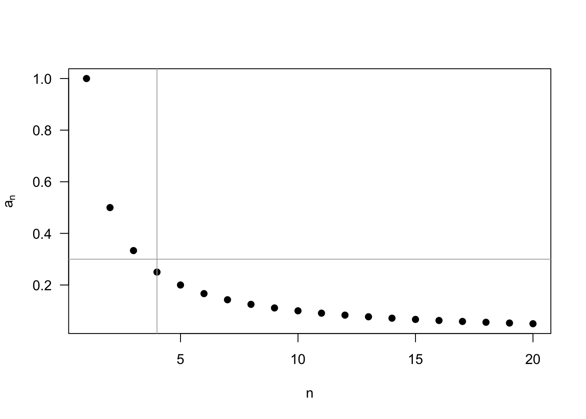
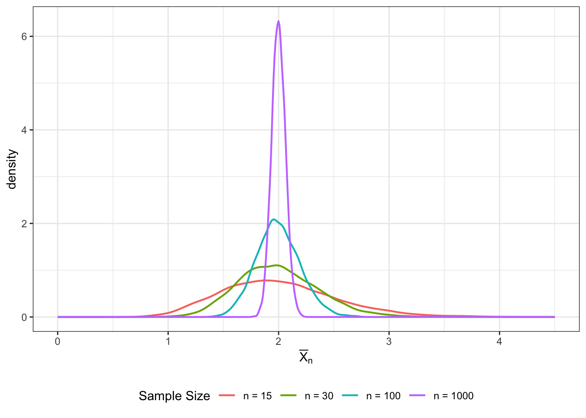
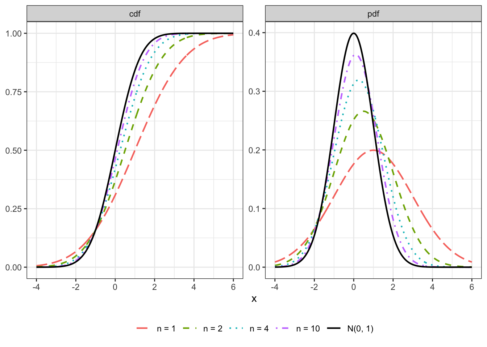
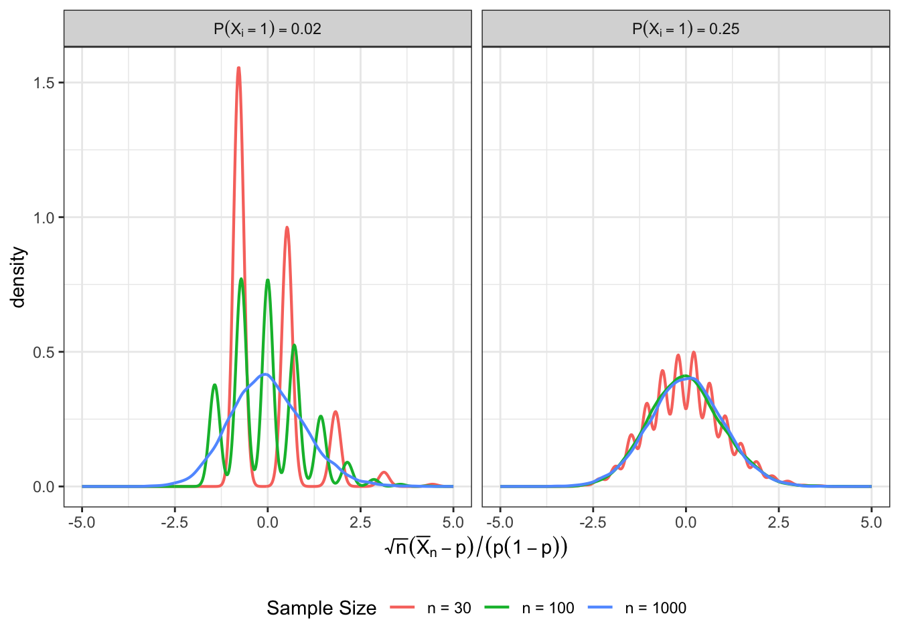
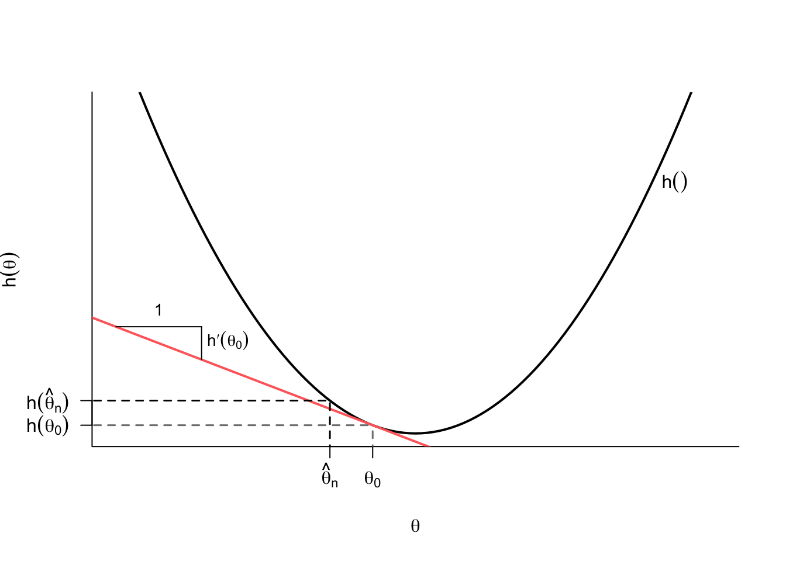

3 Asymptotics
3.1 Introduction
Suppose we are still interested in estimating the proportion of citizens who prefer increasing legal immigration. Based on the last chapter, a good strategy would be to use the sample proportion of immigration supporters in a random sample of citizens. You would have good reason to be confident with this estimator, with its finite-sample properties like unbiasedness and a sampling variance. We call these “finite-sample” properties since they hold at any sample size—they are as true for random samples of size \(n = 10\) as they are for random samples of size \(n = 1{,}000{,}000\).
Finite-sample results, though, are of limited value because they only tell us about the center and spread of the sampling distribution of \(\Xbar_n\). Suppose we found that a sample proportion of \(\Xbar_n = 0.47\) or 47% of respondents in a single survey supported increasing immigration. We might want to know how plausible it would be for the true population proportion—which is distinct from the sample proportion—to be 50% or greater. Questions like this are critical for a decision maker and, to answer this, we need to know the (approximate) distribution of \(\Xbar_n\) in addition to its mean and variance. We can often derive the exact distribution of an estimator if we are willing to make certain, sometimes strong assumptions about the underlying data (for example, if the population is normal, then the sample means will also be normal). Still, this approach is brittle: if our parametric assumption is false, we are back to square one.
In this chapter, we take a different approach by asking what happens to the sampling distribution of estimators as the sample size gets very large, which we refer to as asymptotic theory. While asymptotics will often simplify derivations, an essential point is that everything we do with asymptotics will be an approximation. No one ever has infinite data, but we hope that the approximations will be closer to the truth as our samples get larger.
Asymptotic results are key to modern statistical methods because many methods of quantifying uncertainty about estimates rely on asymptotic approximations. We will rely on the asymptotic results we derive in this chapter to estimate standard errors, construct confidence intervals, and perform hypothesis tests, all without assuming a fully parametric model.
3.2 Convergence of deterministic sequences
A helpful place to begin is by reviewing the basic idea of convergence in deterministic sequences from calculus:
Definition 3.1 A sequence \(\{a_n: n = 1, 2, \ldots\}\) has the limit \(a\) written \(a_n \rightarrow a\), as \(n\rightarrow \infty\) or \(\lim_{n\rightarrow \infty} a_n = a\) if for all \(\varepsilon > 0\) there is some \(n_{\varepsilon} < \infty\) such that for all \(n \geq n_{\varepsilon}\), \(|a_n - a| \leq \varepsilon\).
We say that \(a_n\) converges to \(a\) if \(\lim_{n\rightarrow\infty} a_n = a\). Basically, a sequence converges to a number if the sequence gets closer and closer to that number as the sequence goes on.
Example 3.1 One important sequence that arises often in statistics is \(1/n\) as \(n\to\infty\). Inspecting the sequence in Figure 3.1, it may seem clear that this sequence converges to 0, but showing this using the formal definition of convergence is helpful.
Let us pick a specific value of \(\varepsilon = 0.3\). Now we need to find an integer \(n_{\varepsilon}\) so that \(|1/n - 0| = 1/n \leq \varepsilon\) for all \(n \geq n_{\varepsilon}\). Clearly, if \(\varepsilon = 0.3\), then \(n_{\varepsilon} = 4\) would satisfy this condition since \(1/4 \leq 0.3\).
More generally, for any \(\varepsilon\), \(n \geq 1/\varepsilon\) implies \(1/n \leq \varepsilon\). Thus, setting \(n_{\varepsilon} = \textsf{ceil}(1/\varepsilon)\) ensures that the definition holds for all values of \(\varepsilon\) and that \(\lim_{n\to\infty} 1/n = 0\).
We will mostly not use such formal definitions to establish a limit but, rather, rely on the properties of limits. For example, convergence and limits follow basic arithmetic operations. Suppose that we have two sequences with limits \(\lim_{n\to\infty} a_n = a\) and \(\lim_{n\to\infty} b_n = b\). Then the properties of limits imply:
- \(\lim_{n\to\infty} (a_n + b_n) = a + b\)
- \(\lim_{n\to\infty} a_nb_n = ab\)
- \(\lim_{n\to\infty} ca_n = c\cdot a\)
- \(\lim_{n\to\infty} (a_n/b_n) = a/b\) if \(b \neq 0\)
- \(\lim_{n\to\infty} a_n^{k} = a^{k}\) (for a fixed \(k\))
These rules plus the result in Example 3.1 allow us to prove other useful facts such as \[ \lim_{n\to\infty} \frac{2}{n} = 2 \cdot 0 = 0 \qquad \lim_{n\to\infty} \frac{1}{n^{2}} = 0. \]
Can we apply a similar definition of convergence to sequences of random variables (like estimators)? Possibly. Some examples clarify why this might be difficult.1 Suppose we have a sequence of \(a_n = a\) for all \(n\) (that is, a constant sequence). Then obviously \(\lim_{n\rightarrow\infty} a_n = a\). Now let’s say we have a sequence of random variables, \(X_1, X_2, \ldots\), that are all independent with a standard normal distribution, \(\N(0,1)\) (where \(\N(\mu, \sigma^2)\) indicates a normal distribution with mean \(\mu\) and variance \(\sigma^2\)). From the analogy to the deterministic case, saying that \(X_n\) converges to \(X \sim \N(0, 1)\) would be tempting, but note that because they are all different random variables, \(\P(X_n = X) = 0\). Thus, we must be careful about saying how one variable converges to another variable.
Another example highlights subtle problems with a sequence of random variables converging to a single value. Suppose we have a sequence of random variables \(X_1, X_2, \ldots\) where \(X_n \sim \N(0, 1/n)\). Clearly, the distribution of \(X_n\) will concentrate around 0 for large values of \(n\), so saying that \(X_n\) converges to 0 is tempting. But notice that \(\P(X_n = 0) = 0\) because of the nature of continuous random variables.
3.3 Convergence in probability and consistency
A sequence of random variables can converge in several different ways. The first type of convergence deals with sequences converging to a single value.2
Definition 3.2 A sequence of random variables, \(X_1, X_2, \ldots\), is said to converge in probability to a value \(b\) if for every \(\varepsilon > 0\), \[ \P(|X_n - b| > \varepsilon) \rightarrow 0, \] as \(n\rightarrow \infty\). We write this \(X_n \inprob b\).
What’s happening in this definition? The event \(|X_n - b| > \varepsilon\) says that a draw of \(X_n\) is more than \(\varepsilon\) away from \(b\) (above or below). So convergence in probability says that the probability of being some distance away from the limit value goes to zero as \(n\) goes to \(\infty\). With deterministic sequences, we said that \(a_n\) converges to \(a\) as it gets closer and closer to \(a\) as \(n\) gets bigger. For convergence in probability, the sequence of random variables converges to \(b\) if the probability that random variables are far away from \(b\) gets smaller and smaller as \(n\) gets big.
Example 3.2 Let’s illustrate the definition of convergence in probability by constructing a sequence of random variables, \[ X_n \sim \N(0, 1/n). \]
We can see intuitively that this sequence will be centered at zero with a shrinking variance. Below, we will see that this is enough to establish convergence in probability of \(X_n\) to 0, but we can also show this in terms of its definition. To do so, we need to show that \[ \P(|X_n| > \varepsilon) \to 0. \]
Let \(\Phi(\cdot)\) be the cdf for the standard normal. For any \(n\), the cdf for \(X_n\) is \(\P(X_{n} < x) = \Phi(\sqrt{n}x)\). Thus, \[ \begin{aligned} \P(|X_n| > \varepsilon) &= \P(X_n < -\varepsilon) + \P(X_n > \varepsilon) \\ &= \Phi(-\sqrt{n}\varepsilon) + (1 - \Phi(\sqrt{n}\varepsilon)) \to 0. \end{aligned} \] The last limit is due to \(\sqrt{n}\varepsilon \to \infty\) and thus, by the properties of the cdf, \(\Phi(-\sqrt{n}\varepsilon) \to 0\) and \(\Phi(\sqrt{n}\varepsilon) \to 1\). Clearly this holds for any \(\varepsilon\), so \(X_n \inprob 0\).
NoteNotation alert
Sometimes convergence in probability is written as \(\text{plim}(Z_n) = b\) when \(Z_n \inprob b\); \(\text{plim}\) stands for “probability limit.”
Convergence in probability is crucial for evaluating estimators. While we said that unbiasedness was not the be-all and end-all of properties of estimators, the following property is an essential and fundamental property of good estimators.
Definition 3.3 An estimator \(\widehat{\theta}_n\) is consistent for some parameter \(\theta\) if \(\widehat{\theta}_n \inprob \theta\).
Consistency of an estimator implies that the sampling distribution of the estimator “collapses” on the true value as the sample size gets large. An estimator is inconsistent if, shockingly, it is not consistent. Inconsistency can occur because the estimator converges in probability to the wrong value or because it fails to converge at all (as with \(\widehat{\theta}_{n, \text{first}}\) below). Generally speaking, consistency is a very desirable property of an estimator.
Note
Estimators can be inconsistent yet still converge in probability to an understandable quantity. For example, we will discuss in later chapters that regression coefficients estimated by ordinary least squares (OLS) are consistent for the conditional expectation if the conditional expectation is linear. If that function is non-linear, however, then OLS will be consistent for the best linear approximation to that function. While not ideal, it does mean that this estimator is at least consistent for an interpretable quantity.
We can also define convergence in probability for a sequence of random vectors, \(\mb{Z}_1, \mb{Z}_2, \ldots\), where \(\mb{Z}_n = (Z_{n1}, \ldots, Z_{nk})\) is a random vector of length \(k\). This sequence converges in probability to a vector \(\mb{b} = (b_1, \ldots, b_k)\) if and only if each random variable in the vector converges to the corresponding element in \(\mb{b}\), or that \(Z_{nj} \inprob b_j\) for all \(j = 1, \ldots, k\).
3.4 Useful inequalities
At first glance, establishing an estimator’s consistency will be difficult. How can we know if a distribution will collapse to a specific value without knowing the shape or family of the distribution? It turns out that there are certain relationships between the mean and variance of a random variable and certain probability statements that hold for all distributions (that have finite variance, at least). These relationships are key to establishing results that do not depend on a specific distribution.
Theorem 3.1 (Markov Inequality) For any r.v. \(X\) and any \(\delta >0\), \[ \P(|X| \geq \delta) \leq \frac{\E[|X|]}{\delta}. \]
Proof. Note that we can let \(Y = |X|/\delta\) and rewrite the statement as \(\P(Y \geq 1) \leq \E[Y]\) (since \(\E[|X|]/\delta = \E[|X|/\delta]\) by the properties of expectation), which is what we will show. But also note that \[ \mathbb{I}(Y \geq 1) \leq Y. \] Why does this hold? The two possible values of the indicator function show why. If \(Y\) is less than 1, then the indicator function will be 0, but recall that \(Y\) is nonnegative, so we know that it must be at least as big as 0 so that inequality holds. If \(Y \geq 1\), then the indicator function will take the value one, but we just said that \(Y \geq 1\), so the inequality holds. If we take the expectation of both sides of this inequality, we obtain the result (remember, the expectation of an indicator function is the probability of the event).
In words, Markov’s inequality says that the probability of a random variable being large in magnitude cannot be high if the average is not large in magnitude. Blitzstein and Hwang (2019) provide an excellent intuition behind this result using income as an example. Let \(X\) be the income of a randomly selected individual in a population and set \(\delta = 2\E[X]\) so that the inequality becomes \(\P(X \geq 2\E[X]) \leq 1/2\) (assuming that all income is nonnegative). Here, the inequality says that the share of the population with an income twice the average cannot be greater than 0.5 since if more than half the population were making twice the average income, then the average would have to be higher.
It’s pretty astounding how general this result is since it holds for all random variables. Of course, its generality comes at the expense of not being very informative. If \(\E[|X|] = 5\), for instance, the inequality tells us that \(\P(|X| \geq 1) \leq 5\), which is not very helpful since we already know that probabilities are no greater than 1! We can get tighter bounds if we are willing to make some assumptions about \(X\).
Theorem 3.2 (Chebyshev Inequality) Suppose that \(X\) is an r.v. for which \(\V[X] < \infty\). Then, for every real number \(\delta > 0\), \[ \P(|X-\E[X]| \geq \delta) \leq \frac{\V[X]}{\delta^2}. \]
Proof. To prove this, we only need to square both sides of the inequality inside the probability statement and apply Markov’s inequality: \[ \P\left( |X - \E[X]| \geq \delta \right) = \P((X-\E[X])^2 \geq \delta^2) \leq \frac{\E[(X - \E[X])^2]}{\delta^2} = \frac{\V[X]}{\delta^2}, \] with the last equality holding by the definition of variance.
Chebyshev’s inequality is a straightforward extension of the Markov result: the probability of a random variable being far from its mean (that is, \(|X-\E[X]|\) being large) is limited by the variance of the random variable. If we let \(\delta = c\sigma\), where \(\sigma\) is the standard deviation of \(X\), we can use this result to bound the normalized deviation from the mean: \[ \P\left(\frac{|X - \E[X]|}{\sigma} \geq c \right) \leq \frac{1}{c^2}. \] This statement says the probability of being at least two standard deviations away from the mean must be less than or equal to 1/4 = 0.25. Notice that this bound can be fairly wide. If \(X\) has a normal distribution, we know that about 5% of draws will be greater than 2 SDs away from the mean, much lower than the 25% bound implied by Chebyshev’s inequality.
3.5 The law of large numbers
We can now use these inequalities to show how estimators can be consistent for their target quantities of interest without making parametric assumptions. Why are these inequalities helpful? Remember that convergence in probability was about the probability of an estimator being far away from a value going to zero. Chebyshev’s inequality shows that we can bound these exact probabilities.
The most famous consistency result has a special name.
Theorem 3.3 (Weak Law of Large Numbers) Let \(X_1, \ldots, X_n\) be i.i.d. draws from a distribution with mean \(\mu = \E[X_i]\) where \(\E[|X_i|] < \infty\). Let \(\Xbar_n = \frac{1}{n} \sum_{i =1}^n X_i\). Then, \(\Xbar_n \inprob \mu\).
Proof. We will prove the case in which the random variable has finite variance, \(\sigma^2 = \V[X_i] < \infty\), even though the result holds under infinite variance (the proof just requires techniques outside the scope of this book).
Recall that the sample mean is unbiased, so \(\E[\Xbar_n] = \mu\) with sampling variance \(\sigma^2/n\). We can then apply Chebyshev to the sample mean to get \[ \P(|\Xbar_n - \mu| \geq \delta) \leq \frac{\V[\Xbar_n]}{\delta^2} = \frac{\sigma^2}{n\delta^2} \] As \(n\rightarrow\infty\), the right-hand side goes to 0, which means that the left-hand side also must go to 0, which is the definition of \(\Xbar_n\) converging in probability to \(\mu\).
The weak law of large numbers (WLLN) shows that, under general conditions, the sample mean gets closer to the population mean as \(n\rightarrow\infty\).
Note
The naming of the “weak” law of large numbers seems to imply the existence of a “strong” law of large numbers (SLLN), which is true. The SLLN states that the sample mean converges to the population mean with probability 1. This type of convergence, called almost sure convergence, is stronger than convergence in probability, which only says that the probability of the sample mean being close to the population mean converges to 1. While it is nice to know that this stronger form of convergence holds for the sample mean under the same assumptions, it is rare for researchers outside of theoretical probability and statistics to rely on almost sure convergence.
Example 3.3 Seeing how the distribution of the sample mean changes as a function of the sample size allows us to appreciate the WLLN. We can see this by taking repeated iid samples of different sizes from an exponential random variable with rate parameter 0.5 so that \(\E[X_i] = 2\). In Figure 3.2, we show the distribution of the sample mean (across repeated samples) when the sample size is 15, 30, 100, and 1000. The sample mean distribution “collapses” on the true population mean, 2. The probability of being far away from 2 becomes progressively smaller as the sample size increases.

The WLLN also holds for random vectors in addition to random variables. Let \((\X_1, \ldots, \X_n)\) be an iid sample of random vectors of length \(k\), \(\mb{X}_i = (X_{i1}, \ldots, X_{ik})\). We can define the vector sample mean as just the vector of sample means for each of the entries:
\[ \overline{\mb{X}}_n = \frac{1}{n} \sum_{i=1}^n \mb{X}_i = \begin{pmatrix} \Xbar_{n,1} \\ \Xbar_{n,2} \\ \vdots \\ \Xbar_{n, k} \end{pmatrix} \] Since this is just a vector of sample means, each random variable in the random vector will converge in probability to the mean of that random variable. Fortunately, this is the exact definition of convergence in probability for random vectors. We formally write this in the following theorem.
Theorem 3.4 If \(\X_i \in \mathbb{R}^k\) are iid draws from a distribution with \(\E[|X_{ij}|] < \infty\) for all \(j=1,\ldots,k\) then as \(n\rightarrow\infty\)
\[ \overline{\mb{X}}_n \inprob \E[\X] = \begin{pmatrix} \E[X_{i1}] \\ \E[X_{i2}] \\ \vdots \\ \E[X_{ik}] \end{pmatrix}. \]
NoteNotation alert
Note that many of the formal results presented so far have “moment conditions” that certain moments are finite. For the vector WLLN, we saw that applied to the mean of each variable in the vector. Some books use a shorthand for this: \(\E\Vert \X_i\Vert < \infty\), where \[ \Vert\X_i\Vert = \left(X_{i1}^2 + X_{i2}^2 + \ldots + X_{ik}^2\right)^{1/2}. \] This expression has slightly more compact notation, but why does it work?
One can show that this function, called the Euclidean norm or \(L_2\)-norm, bounds the absolute value of any particular entry in the vector, \[ \Vert\X_i\Vert = \left(X_{i1}^2 + X_{i2}^2 + \ldots + X_{ik}^2\right)^{1/2} \geq \sqrt{X_{ij}^2} = |X_{ij}|, \] which implies \(\E[\Vert \X_i\Vert] \geq \E[|X_{ij}|]\). So if \(\E[\Vert \X_i\Vert]\) is finite, then all entries must also be finite.
One other implicit result that theorems often rely on is the relationship between moments of different order. Namely, if a given moment exists—say, \(\E[X_i^4] < \infty\)—then all lower-order moments like \(\E[X_i]\) and \(\E[X_i^2]\) also must exist. So theorems are often stated with the lowest-order moment condition required to make sure the theorem is true.
3.6 Consistency of estimators
The WLLN shows that the sample mean of iid draws is consistent for the population mean, which is a massive result given that so many estimators are sample means of potentially complicated functions of the data. What about other estimators? The proof of the WLLN points to one way to determine that an estimator is consistent: if it is unbiased and the sampling variance shrinks as the sample size grows.
Theorem 3.5 For any estimator \(\widehat{\theta}_n\), if \(\textsf{bias}[\widehat{\theta}_n] = 0\) and \(\V[\widehat{\theta}_n] \rightarrow 0\) as \(n\rightarrow \infty\), then \(\widehat{\theta}_n\) is consistent.
Thus, for unbiased estimators, we can establish their consistency by showing their sampling variance tends to zero as the sample size gets larger (though note there are consistent estimators that have sampling variance that does not converge to zero). This result is handy since working with the probability statements used for the WLLN can sometimes be confusing.
What about biased estimators? Consider a situation where we calculate average household income, \(\Xbar_n\), from a random sample with mean \(\mu\), but our actual interest is in the log of average income, \(\alpha = \log(\mu)\). We can obviously use the standard plug-in estimator \(\widehat{\alpha} = \log(\Xbar_n)\), but, for nonlinear functions like logarithms we have \(\log\left(\E[Z]\right) \neq \E[\log(Z)]\), so \(\E[\widehat{\alpha}] \neq \log(\E[\Xbar_n])\) and the plug-in estimator will be biased for \(\log(\mu)\). Obtaining an expression for the bias in terms of \(n\) is also difficult. Is the quest doomed? Must we give up on consistency? No, and, in fact, a few key properties of consistency make working with it much easier compared to unbiasedness.
Theorem 3.6 (Properties of convergence in probability) Let \(Z_n\) and \(W_n\) be two sequences of random variables such that \(Z_n \inprob a\) and \(W_n \inprob b\), and let \(g(\cdot)\) be a continuous function (at the limit). Then,
- \(g(Z_n) \inprob g(a)\) (continuous mapping theorem)
- \(Z_n + W_n \inprob a + b\)
- \(Z_nW_n \inprob ab\)
- \(Z_n/W_n \inprob a/b\) if \(b \neq 0\).
We can now see that many of the nasty problems with expectations and nonlinear functions are made considerably easier with convergence in probability in the asymptotic setting. So while we know that \(\log(\Xbar_n)\) is biased for \(\log(\mu)\), we know that it is consistent since \(\log(\Xbar_n) \inprob \log(\mu)\) because \(\log\) is continuous for \(\mu > 0\).
Example 3.4 Suppose we implemented a survey by randomly selecting a sample from the population of size \(n\), but not everyone responds to the survey. Let the data consist of pairs of random variables, \((Y_1, R_1), \ldots, (Y_n, R_n)\), where \(Y_i\) is the question of interest and \(R_i\) is a binary indicator for if the respondent answered the question (\(R_i = 1\)) or not (\(R_i = 0\)). Our goal is to estimate the mean of the question for responders: \(\E[Y_i \mid R_i = 1]\). Let \(\P(R_i = 1)\) be the probability of responding. We can use the law of iterated expectation to obtain \[ \begin{aligned} \E[Y_iR_i] &= \E[Y_i \mid R_i = 1]\P(R_i = 1) + \E[ 0 \mid R_i = 0]\P(R_i = 0) \\ \implies \E[Y_i \mid R_i = 1] &= \frac{\E[Y_iR_i]}{\P(R_i = 1)} \end{aligned} \]
The relevant estimator for this quantity is the mean of the outcome among those who responded, which is slightly more complicated than a typical sample mean because the denominator is a random variable: \[ \widehat{\theta}_n = \frac{\sum_{i=1}^n Y_iR_i}{\sum_{i=1}^n R_i}. \] Notice that this estimator is the ratio of two random variables. The numerator has mean \(n\E[Y_iR_i]\) and the denominator has mean \(n\P(R_i = 1)\). This estimator is actually unbiased (conditional on at least 1 responder), but this result is somewhat tricky to show because of the nonlinear way \(\sum_{i=1}^n R_i\) enters the estimator. Consistency, on the other hand, is easy to establish.
We can establish consistency of our estimator by noting that we can rewrite the estimator as a ratio of sample means \[ \widehat{\theta}_n = \frac{(1/n)\sum_{i=1}^n Y_iR_i}{(1/n)\sum_{i=1}^n R_i}, \] where by the WLLN the numerator \((1/n)\sum_{i=1}^n Y_iR_i \inprob \E[Y_iR_i]\) and the denominator \((1/n)\sum_{i=1}^n R_i \inprob \P(R_i = 1)\). Thus, by Theorem 3.6, we have \[ \widehat{\theta}_n = \frac{(1/n)\sum_{i=1}^n Y_iR_i}{(1/n)\sum_{i=1}^n R_i} \inprob \frac{\E[Y_iR_i]}{\P(R_i = 1)} = \E[Y_i \mid R_i = 1], \] so long as the probability of responding is greater than zero. This establishes that our sample mean among responders is consistent for that quantity. Note that consistency does not solve nonresponse bias since \(\E[Y_i \mid R_i = 1]\) still might differ from \(\E[Y_i]\).
Keeping the difference between unbiased and consistent clear in your mind is essential. You can easily create ridiculous unbiased estimators that are inconsistent. Let’s return to our iid sample, \(X_1, \ldots, X_n\), from a population with \(\E[X_i] = \mu\). There is nothing in the rule book against defining an estimator \(\widehat{\theta}_{n,\text{first}} = X_1\) that uses the first observation as the estimate. This estimator is silly, but it is unbiased since \(\E[\widehat{\theta}_{n,\text{first}}] = \E[X_1] = \mu\). It is inconsistent since its distribution does not change at all as a function of the sample size. Generally speaking, we can regard “unbiased but inconsistent” estimators as silly and not worth our time (along with biased and inconsistent estimators).
Biased but consistent estimators are often much more interesting. We have already seen some of these, like \(\log(\Xbar_n)\), but there are many more. Maximum likelihood estimators, for example, are (under some regularity conditions) consistent for the parameters of a parametric model but are often biased.
Example 3.5 (Plug-in variance estimator) In the last chapter, we introduced the plug-in estimator for the population variance, \[ \widehat{\sigma}^2 = \frac{1}{n} \sum_{i=1}^n (X_i - \Xbar_n)^2, \] and derived its bias as \(-(1/n)\sigma^2\). Using the alternative formulation of the sum of squared deviations from the mean, we can rewrite this estimator as \[ \widehat{\sigma}^2 = \frac{1}{n} \sum_{i=1}^n X_i^2 - (\Xbar_n)^2. \] The first term is just a sample mean, so if \(\E[X_i^2] < \infty\), the WLLN will apply, so that \[ \frac{1}{n} \sum_{i=1}^n X_i^2 \inprob \E[X_i^2]. \] The WLLN and Theorem 3.6 will ensure that \((\Xbar_n)^2 \inprob \mu^2\). Again applying Theorem 3.6, we can see that \[ \widehat{\sigma}^2 = \frac{1}{n} \sum_{i=1}^n X_i^2 - (\Xbar_n)^2 \inprob \E[X_i^2] - \mu^2 = \sigma^2 \]
Thus, the plug-in estimator is another biased but consistent estimator.
Example 3.6 One general class of estimators is called ratio estimators and are, as their name implies, ratios of estimators. Let \((Y_i, X_i)\) be iid draws from a population distribution with population means, \(\mu_y\) and \(\mu_x\), and two sample means, \(\Ybar_n\) and \(\Xbar_n\). The ratio of the sample means is generally biased for the ratio of population means, \[ \E\left[\frac{\Ybar_n}{\Xbar_n} \right] \neq \frac{\mu_y}{\mu_x}. \] However, as long as \(\mu_x \neq 0\), Theorem 3.6 tells us that this is a consistent estimator, \(\Ybar_n/\Xbar_n \inprob \mu_y/\mu_x\).
We can broaden Theorem 3.5 to the class of asymptotically unbiased estimators that have bias that vanishes as the sample size grows.
Theorem 3.7 For any estimator \(\widehat{\theta}_n\), if \(\textsf{bias}[\widehat{\theta}_n] \to 0\) and \(\V[\widehat{\theta}_n] \rightarrow 0\) as \(n\rightarrow \infty\), then \(\widehat{\theta}_n\) is consistent.
Proof. Using Markov’s inequality, we have \[ \P\left( |\widehat{\theta}_n - \theta| \geq \delta \right) = \P((\widehat{\theta}_n-\theta)^2 \geq \delta^2) \leq \frac{\E[(\widehat{\theta}_n - \theta)^2]}{\delta^2} = \frac{\textsf{bias}[\widehat{\theta}_n]^2 + \V[\widehat{\theta}_n]}{\delta^2} \to 0. \] The last equality follows from the bias-variance decomposition of the mean squared error in Equation 2.1.
3.7 Convergence in distribution and the central limit theorem
Convergence in probability and the law of large numbers are beneficial for understanding how our estimators will (or will not) collapse to their estimand as the sample size increases. But what about the shape of the sampling distribution of our estimators? For statistical inference, we would like to be able to make probability statements such as \(\P(a \leq \widehat{\theta}_n \leq b)\). These statements will be the basis of hypothesis testing and confidence intervals. But to make those types of statements, we need to know the entire distribution of \(\widehat{\theta}_n\), not just the mean and variance. Luckily, established results will allow us to approximate the sampling distribution of a vast swath of estimators when our sample sizes are large.
We need first to describe a different form of convergence to see how we will develop these approximations.
Definition 3.4 Let \(X_1,X_2,\ldots\) be a sequence of r.v.s, and for \(n = 1,2, \ldots\) let \(F_n(x)\) be the c.d.f. of \(X_n\). Then it is said that \(X_1, X_2, \ldots\) converges in distribution to r.v. \(X\) with c.d.f. \(F(x)\) if \[ \lim_{n\rightarrow \infty} F_n(x) = F(x), \] for all values of \(x\) for which \(F(x)\) is continuous. We write this as \(X_n \indist X\) or sometimes \(X_n ⇝ X\).
Essentially, convergence in distribution means that as \(n\) gets large, the distribution of \(X_n\) becomes more and more similar to the distribution of \(X\), which we often call the asymptotic distribution of \(X_n\) (other names include the large-sample distribution). If we know that \(X_n \indist X\), then we can use the distribution of \(X\) as an approximation to the distribution of \(X_n\), and that distribution can be reasonably accurate. This definition also helps to resolve an earlier puzzle: a sequence of iid \(\N(0, 1)\) random variables trivially converges in distribution to a \(\N(0, 1)\) since every \(F_n = \Phi\) (where \(\Phi\) is the cdf of the standard normal) even though the draws of any particular \(X_n\) are not necessarily close to the draws of the limiting distribution.
Example 3.7 A simple example of convergence in distribution would be the sequence \[ X_n \sim N\left(\frac{1}{n}, \left(1 + \frac{1}{n}\right)^2\right), \] which, of course, has the cdf, \[ \Phi\left(\frac{x - 1/n}{1+1/n}\right). \] By inspection, this converges to \(\Phi(x)\), which is the cdf for the standard normal. This implies \(X_n \indist \N(0, 1)\). Figure 3.3 shows the evolution of the distributions at various values of \(n\).

One of the most remarkable results in probability and statistics is that a large class of estimators will converge in distribution to one particular family of distributions: the normal. This result is one reason we study the normal so much and why investing in building intuition about it will pay off across many domains of applied work. We call this broad class of results the “central limit theorem” (CLT), but it would probably be more accurate to refer to them as “central limit theorems” since much of statistics is devoted to showing the result in different settings. We now present the simplest CLT for the sample mean.
Theorem 3.8 (Central Limit Theorem) Let \(X_1, \ldots, X_n\) be i.i.d. r.v.s from a distribution with mean \(\mu = \E[X_i]\) and variance \(\sigma^2 = \V[X_i] > 0\). Then if \(\E[X_i^2] < \infty\), we have \[ \frac{\Xbar_n - \mu}{\sqrt{\V[\Xbar_n]}} = \frac{\sqrt{n}\left(\Xbar_n - \mu\right)}{\sigma} \indist \N(0, 1). \]
In words: the sample mean of a random sample from a population with finite mean and variance will be approximately normally distributed in large samples. Notice how we have not made any assumptions about the distribution of the underlying random variables, \(X_i\). They could be binary, event count, continuous, or anything. The CLT is incredibly broadly applicable—even though we have stated it for iid data, versions of it (and the LLN) exist for independent (but not identically distributed) data, clustered data, and weakly dependent data, though the variances are often quite different than the iid case.
NoteWhy \(\sqrt{n}\)?
Why do we state the CLT in terms of the sample mean after centering and scaling by its standard error? Suppose we don’t normalize the sample mean in this way. In that case, it isn’t easy to talk about convergence in distribution because we know from the WLLN that \(\Xbar_n \inprob \mu\), so in the limit, the distribution of \(\Xbar_n\) is concentrated as a point mass around that value. Standardizing by centering around its mean \(\E[\Xbar_n] = \mu\) and rescaling by its standard error \(\sqrt{\V[\Xbar_n]} = \sigma / \sqrt{n}\) ensures that the sequence \(\sqrt{n}(\Xbar_n - \mu)/\sigma\) always has mean 0 and variance 1 for every possible \(n\). The \(1/\sqrt{n}\) scaling is the rate at which the standard error shrinks, so \(\sqrt{n}\) is exactly the scaling we need to keep the standard error stable.
Sometimes you will see the equivalent result as \[ \sqrt{n}\left(\Xbar_n - \mu\right) \indist \N(0, \sigma^2). \]
Why do sample means converge to a normal distribution no matter the distribution of \(X_i\)? We can build intuition by splitting the question into two steps.
First, the limiting distribution cannot depend on the exact distribution of \(X_i\). Let’s write the centered and rescaled mean as a sum of \(n\) standardized terms, scaled down by \(1/\sqrt{n}\), \[ Z_n = \frac{\sqrt{n}(\Xbar_n - \mu)}{\sigma} = \frac{1}{\sqrt{n}}\sum_{i=1}^n \frac{X_i - \mu}{\sigma}. \] Now, imagine replacing each of the terms in this sum with independent random variables \(Y_1, \ldots, Y_n\) that also have mean 0 and variance 1. This swap will change the distribution of \(Z_n\) but not its mean or variance, since we have matched those. Instead, the swap will affect higher-order moments like skewness or kurtosis. If the \(X_i\) have skewness \(\E[((X_i - \mu)/\sigma)^3] = \gamma_X\), then \(Z_n\) has skewness \(\gamma_X / \sqrt{n}\) whereas the swapped version with \(Y_i\) would have skewness \(\gamma_Y / \sqrt{n}\). Either way the skewness vanishes as \(n\to\infty\), and differences in higher moments fade even more quickly (such as \(1/n\)). Essentially, as we add more terms to \(Z_n\), the effect of the original distribution of \(X_i\) on \(Z_n\) fades. (This sketch assumes these higher moments exist, though the CLT for iid data relies only on finite variance.)
Second, if every distribution leads to the same limiting distribution, we might as well choose an easy distribution to work with. If \(X_i\) are normal, then \(Z_n\) would be exactly a standard normal for all \(n\) since sums of independent normals are themselves normally distributed. Thus, the limit for normal variables must be \(\N(0,1)\), which also must be the common limit for sample means of any distribution. In fact, the normal distribution is the only finite-variance distribution that is stable under addition in this way, which is why there are no other distributions that could be the limit.
Example 3.8 To illustrate how the CLT works, we can simulate the sampling distribution of the (normalized) sample mean at different sample sizes and different data generating processes. We’ll consider \(X_1, \ldots, X_n\) to be iid samples from a Bernoulli with probability of success either \(p = 0.02\) or \(p=0.25\). We then draw repeated samples of size \(n \in \{30, 100, 1000\}\), and calculate \(\sqrt{n}(\Xbar_n - p)/\sigma\) for each random sample. Figure 3.4 plots the density of these sampling distributions. For \(p = 0.25\), we can see that even at \(n=30\), the rough shape of the density looks normal, with spikes and valleys due to the discrete nature of the data (the sample mean can only take on 31 possible values in this case). By \(n=100\), the sampling distribution is very close to a true standard normal and is barely distinguishable than the curve at \(n = 1000\). For \(p=0.02\), on the other hand, the sampling distribution looks very non-normal and spiky even at \(n=100\), and it isn’t until \(n=1000\) that we really see the familiar normal shape. One reason we see the slow convergence is that the skewness of the \(p=0.02\) case is larger at every \(n\). From knowledge of the skewness of binomials, in the \(p = 0.02\) case we have skewness of 1.25, 0.69, and 0.22 skewness at \(n=30\), \(n = 100\), and \(n = 1000\), respectively. For the \(p = 0.25\) case, those same skewness values 0.21, 0.12, and 0.04.

These differences highlight how, while the limiting result of the CLT applies to a wide variety of data generating processes, the nature of those processes can affect how quickly the limiting distribution will be a useful approximation. Thus, we cannot know in advance if a CLT-based normal distribution will provide a good approximation for the exact DGP and sample size we’re studying.
We can use this result to state approximations that we can use when discussing estimators such as \[ \Xbar_n \overset{a}{\sim} \N(\mu, \sigma^2/n), \] where we use \(\overset{a}{\sim}\) to be “approximately distributed as in large samples.” This approximation allows us to say things like: “in large samples, we should expect the sample mean to be within \(2\sigma/\sqrt{n}\) of the true mean in about 95% of repeated samples.” These statements will be essential for hypothesis tests and confidence intervals! Estimators so often follow the CLT that we have an expression for this property.
Definition 3.5 An estimator \(\widehat{\theta}_n\) of a parameter \(\theta\) is asymptotically normal if \[ \sqrt{n}\left( \widehat{\theta}_n - \theta \right) \indist N\left(0, V_{\theta}\right). \]
We refer to \(V_{\theta}\) as the asymptotic variance of the centered and \(\sqrt{n}\)-stabilized estimator, \(\sqrt{n}(\widehat{\theta}_n - \theta)\). An asymptotically normal estimator will, in large samples, have an approximately normal distribution, \[ \widehat{\theta}_n \overset{a}{\sim} \N(\theta, V_{\theta}/n). \] We can then refer to the asymptotic standard error of \(\widehat{\theta}_n\) as \(\sqrt{V_{\theta}/n}\).
There are several properties of convergence in distribution that are helpful to us.
Theorem 3.9 (Properties of convergence in distribution) Let \(Z_n\) be a sequence of random variables \(Z_1, Z_2,\ldots\) that converges in distribution to some random variable \(Z\) and let \(W_n\) be a sequence of random variables \(W_1, W_2,\ldots\) that converges in probability to some number, \(c\). Then,
- \(g(Z_n) \indist g(Z)\) for all functions \(g\) that are continuous in the limit
- \(Z_nW_n\) converges in distribution to \(cZ\)
- \(Z_n + W_n\) converges in distribution to \(Z + c\)
- \(Z_n / W_n\) converges in distribution to \(Z / c\) if \(c \neq 0\)
We refer to the last three results as Slutsky’s theorem. These results are often crucial for determining an estimator’s asymptotic distribution. Why focus on the case with \(Z_n\) converging in distribution and \(@_n\) converging in probability to a point value? In the limit, \(W_n\) adds no variability so the limiting distribution is entirely driven by the limit of \(Z_n\). If both converged in distribution, so \(W_n \indist W\), the limiting distribution would depend on the joint distribution of \(Z_n\) and \(@_n\), which could include correlation that would be missed by the sum of the marginal limits, \(Z + W\).
A critical application of Slutsky’s theorem is when we replace the (unknown) population variance in the CLT with an estimate. Recall the definition of the sample variance as \[ S_n^2 = \frac{1}{n-1} \sum_{i=1}^n (X_i - \Xbar_n)^2, \] with the sample standard deviation defined as \(S_{n} = \sqrt{S_{n}^2}\). In Example 3.5 we showed that \(\widehat{\sigma}^2 \inprob \sigma^2\). Since \(S_n^2 = (n / (n-1))\widehat{\sigma}^2\), then by the CMT, we have \[ S_{n}^2 \inprob \sigma^2 = \V[X_i], \qquad S_{n} \inprob \sigma, \] which, by Slutsky’s theorem, implies that \[ \frac{\sqrt{n}\left(\Xbar_n - \mu\right)}{S_n} \indist \N(0, 1) \] Comparing this result to the statement of CLT, we see that replacing the population variance with a consistent estimate of the variance (or standard deviation) does not affect the asymptotic distribution. Thus, \(S_n / \sqrt{n}\) is a valid standard error estimator even though we saw in the last chapter it was slightly biased. Of course, in small samples the substitution could matter—we will return to this with the \(t\)-distribution in Chapter 5.
We can generalize this idea to any asymptotically normal estimator, \(\widehat{\theta}_n\). Suppose we have a consistent estimator for the asymptotic variance of the stabilized estimator, \(\widehat{V}_{\theta} \inprob V_{\theta} > 0\). Then we can obtain an estimator for the standard error, \(\sqrt{\widehat{V}_{\theta} / n}\) and apply Slutsky’s theorem to show that normalizing by this estimated standard error will also converge to a standard normal: \[ \frac{\widehat{\theta}_n - \theta}{\sqrt{\widehat{V}_{\theta} / n}} \indist \N(0, 1) \]
Like with the WLLN, the CLT holds for random vectors of sample means, where their centered and scaled versions converge to a multivariate normal distribution with a covariance matrix equal to the covariance matrix of the underlying random vectors of data, \(\X_i\). For a sequence of random vectors, \(\mb{Z}_n\), and a limit vector \(\mb{Z}\), we say \(\mb{Z}_n\) converges in distribution to \(\mb{Z}\) (or \(\mb{Z}_n \indist \mb{Z}\)) if the joint distribution of \(\mb{Z}_n\) converges to the joint distribution of \(\mb{Z}\). Note that marginal convergence in distribution of each entry of \(\mb{Z}_n\) is necessary, but not sufficient for multivariate convergence.
Theorem 3.10 If \(\mb{X}_i \in \mathbb{R}^k\) are i.i.d. and \(\E\Vert \mb{X}_i \Vert^2 < \infty\), then as \(n \to \infty\), \[ \sqrt{n}\left( \overline{\mb{X}}_n - \mb{\mu}\right) \indist \N(0, \mb{\Sigma}), \] where \(\mb{\mu} = \E[\mb{X}_i]\) and \(\mb{\Sigma} = \V[\mb{X}_i] = \E\left[(\mb{X}_i-\mb{\mu})(\mb{X}_i - \mb{\mu})'\right]\).
Notice that \(\mb{\mu}\) is the vector of population means for all the random variables in \(\X_i\) and \(\mb{\Sigma}\) is the variance-covariance matrix for that vector.
Note
As with the notation alert with the WLLN, we are using shorthand here, \(\E\Vert \mb{X}_i \Vert^2 < \infty\), which implies that \(\E[X_{ij}^2] < \infty\) for all \(j = 1,\ldots, k\), or equivalently, that the variances of each variable in the sample means are finite.
Finally, there is a multivariate version of Theorem 3.9.
Theorem 3.11 (Properties of convergence in distribution for random vectors) Let \(\mb{Z}_n\) be a sequence of random vectors \(\mb{Z}_1, \mb{Z}_2,\ldots\) that converges in distribution to some random vector \(\mb{Z}\) and let \(\mb{W}_n\) be a sequence of random vectors \(\mb{W}_1, \mb{W}_2,\ldots\) that converges in probability to some constant vector, \(\mb{c}\). Then,
- \(g(\mb{Z}_n) \indist g(\mb{Z})\) for all functions \(g\) that are continuous in the limit.
- \(g(\mb{Z}_n, \mb{W}_n) \indist g(\mb{Z}, \mb{c})\) for all functions \(g\) that are continuous in the limit.
3.8 Delta method
Suppose that we know that an estimator follows the CLT, and so we have \[ \sqrt{n}\left(\widehat{\theta}_n - \theta \right) \indist \N(0, V_{\theta}), \] but we actually want to estimate \(h(\theta)\) so we use the plug-in estimator, \(h(\widehat{\theta}_n)\). It seems like we should be able to apply part 1 of Theorem 3.9 to obtain the asymptotic distribution of \(h(\widehat{\theta}_n)\). Still, the CLT established the large-sample distribution of the centered and scaled random sequence, \(\sqrt{n}(\widehat{\theta}_n - \theta)\), not of the original estimator itself, and we would need the latter to investigate the asymptotic distribution of \(h(\widehat{\theta}_n)\). We can use a little bit of calculus to get an approximation of the distribution we need.
Theorem 3.12 If \(\sqrt{n}\left(\widehat{\theta}_n - \theta_0\right) \indist \N(0, V_{\theta})\) and \(h(u)\) is continuously differentiable in a neighborhood around \(\theta_0\), then as \(n\to\infty\), \[ \sqrt{n}\left(h(\widehat{\theta}_n) - h(\theta_0) \right) \indist \N(0, (h'(\theta_0))^2 V_{\theta}). \]
Understanding what is happening here provides intuition as to when this might go wrong. Why do we focus on continuously differentiable functions, \(h()\)? These functions can be well-approximated with a line in a neighborhood around \(\theta_0\). In Figure 3.5, we plot the tangent line at \(\theta_0\), which has slope \(h'(\theta_0)\) and is very similar to \(h(\theta)\) for values close to \(\theta_0\). Because of this, we can approximate the difference between \(h(\widehat{\theta}_n)\) and \(h(\theta_0)\) with what this tangent line would give us: \[ \underbrace{\left(h(\widehat{\theta}_n) - h(\theta_0)\right)}_{\text{change in } y} \approx \underbrace{h'(\theta_0)}_{\text{slope}} \underbrace{\left(\widehat{\theta}_n - \theta_0\right)}_{\text{change in } x}, \] and then multiplying both sides by \(\sqrt{n}\) gives \[ \sqrt{n}\left(h(\widehat{\theta}_n) - h(\theta_0)\right) \approx h'(\theta_0)\sqrt{n}\left(\widehat{\theta}_n - \theta_0\right). \] For a consistent estimator, this approximation improves as \(n\) grows because \(\widehat\theta_n\) lands ever closer to \(\theta_0\), where the tangent line is accurate. The right-hand side of this approximation converges to \(h'(\theta_0)Z\), where \(Z \sim \N(0, V_{\theta})\). The variance of this quantity will be \[ \V[h'(\theta_0)Z] = (h'(\theta_0))^2\V[Z] = (h'(\theta_0))^2V_{\theta}, \] by the properties of variances.

Example 3.9 Let’s return to the iid sample \(X_1, \ldots, X_n\) with mean \(\mu = \E[X_i]\) and variance \(\sigma^2 = \V[X_i]\). From the CLT, we know that \(\sqrt{n}(\Xbar_n - \mu) \indist \N(0, \sigma^2)\). Suppose that we want to estimate \(\log(\mu)\), so we use the plug-in estimator \(\log(\Xbar_n)\) (assuming that \(X_i > 0\) for all \(i\) so that we can take the log). What is the asymptotic distribution of this estimator? This is a situation where \(\widehat{\theta}_n = \Xbar_n\) and \(h(\mu) = \log(\mu)\). From basic calculus, we know that \[ h'(\mu) = \frac{\partial \log(\mu)}{\partial \mu} = \frac{1}{\mu}, \] so applying the delta method, we can determine that \[ \sqrt{n}\left(\log(\Xbar_n) - \log(\mu)\right) \indist \N\left(0,\frac{\sigma^2}{\mu^2} \right). \]
We can build a plug-in estimator of the asymptotic variance \(\widehat{V} = S_n^2 / \Xbar_n^2\) which will converge in probability to the asymptotic variance, \(\sigma^2 / \mu ^ 2\) by the CMT. So an estimated standard error would be \(\widehat{\se}[\log(\Xbar_n)] = S_n / (\Xbar_n \sqrt{n})\).
Example 3.10 What about estimating \(h(\mu) =\mu^2\) with \(\Xbar_n^2\)? Recall that \[ h'(\mu) = \frac{\partial \mu^2}{\partial \mu} = 2\mu \] so applying the delta method when \(\mu \neq 0\), we have \[ \sqrt{n}\left(\Xbar_n^2 - \mu^2\right) \indist \N(0, 4\mu^2\sigma^2). \]
What about when \(\mu = 0\)? In this case, the delta method predicts the centered and scaled version of \(\Xbar_n^2\) will have the distribution \(\N(0, 0)\), which is just a point mass on 0 which does not help us learn much about the limiting distribution of \(\Xbar_n^2\). To understand why, notice that the tangent line for \(\mu^2\) at \(\mu = 0\) is a horizontal line, where small changes in \(\Xbar_n\) lead to practically no change in \(\Xbar_n^2\). Thus, the delta method approximation breaks down and we need a different way of learning about the large-sample distribution. More generally, the approximation will break down when \(h'(\theta_0) = 0\) (as in this case) or if there is a kink in \(h\) at \(\theta_0\) (so the derivative does not exist). Even when \(\mu\) is nonzero but within a few standard errors of zero, the tangent line is nearly flat, and the delta can provide a poor approximation unless the sample size is quite large.
Like all of the results in this chapter, there is a multivariate version of the delta method that is incredibly useful in practical applications. For example, suppose we want to combine two different estimators (or two different estimated parameters) to estimate another quantity. We now let \(\mb{h}(\mb{\theta}) = (h_1(\mb{\theta}), \ldots, h_m(\mb{\theta}))\) map from \(\mathbb{R}^k \to \mathbb{R}^m\) and be continuously differentiable (we make the function bold since it returns an \(m\)-dimensional vector). It will help us to use more compact matrix notation if we introduce an \(m \times k\) Jacobian matrix of all partial derivatives \[ \mb{H}(\mb{\theta}) = \partial\mb h/\partial\mb\theta' = \begin{pmatrix} \frac{\partial h_1(\mb{\theta})}{\partial \theta_1} & \frac{\partial h_1(\mb{\theta})}{\partial \theta_2} & \cdots & \frac{\partial h_1(\mb{\theta})}{\partial \theta_k} \\ \frac{\partial h_2(\mb{\theta})}{\partial \theta_1} & \frac{\partial h_2(\mb{\theta})}{\partial \theta_2} & \cdots & \frac{\partial h_2(\mb{\theta})}{\partial \theta_k} \\ \vdots & \vdots & \ddots & \vdots \\ \frac{\partial h_m(\mb{\theta})}{\partial \theta_1} & \frac{\partial h_m(\mb{\theta})}{\partial \theta_2} & \cdots & \frac{\partial h_m(\mb{\theta})}{\partial \theta_k} \end{pmatrix}, \] which we can use to generate the equivalent multivariate linear approximation \[ \left(\mb{h}(\widehat{\mb{\theta}}_n) - \mb{h}(\mb{\theta}_0)\right) \approx \mb{H}(\mb{\theta}_0)\left(\widehat{\mb{\theta}}_n - \mb{\theta}_0\right). \] We can use this fact to derive the multivariate delta method.
Theorem 3.13 Suppose that \(\sqrt{n}\left(\widehat{\mb{\theta}}_n - \mb{\theta}_0 \right) \indist \N(0, \mb{\Sigma})\), then for any function \(\mb{h}\) that is continuously differentiable in a neighborhood of \(\mb{\theta}_0\), we have \[ \sqrt{n}\left(\mb{h}(\widehat{\mb{\theta}}_n) - \mb{h}(\mb{\theta}_0) \right) \indist \N(0, \mb{H}\mb{\Sigma}\mb{H}'), \] where \(\mb{H} = \mb{H}(\mb{\theta}_0)\).
This result follows from the approximation above plus rules about variances of random vectors. Recall that for any compatible matrix of constants, \(\mb{A}\), we have \(\V[\mb{A}\mb{Z}] = \mb{A}\V[\mb{Z}]\mb{A}'\). The matrix of constants appears twice here, like the matrix version of the “squaring the constant” rule for variance.
Example 3.11 In Example 3.6, we found that the ratio of sample means was consistent for the ratio of population means, \[ \frac{\Ybar_n}{\Xbar_n} \inprob \frac{\mu_y}{\mu_x}. \] What about the large-sample distribution of \(\Ybar_n/\Xbar_n\)? Consider the population means as a vector, \(\mb{\theta} = (\mu_y, \mu_x)\), and the ratio mapping \(h(\mb{\theta}) = \frac{\mu_y}{\mu_x}\) with Jacobian \[ \mb{H}(\mb{\theta}) = \begin{pmatrix} \frac{1}{\mu_x} & -\frac{\mu_y}{\mu_x^2} \end{pmatrix} \] Let \(\V[Y_i] = \sigma^2_y\) and \(\V[X_i] = \sigma^2_x\) be the variances of the data and let \(\sigma_{yx} = \cov(Y_i, X_i)\) be the covariance between the variables. T he multivariate CLT tells us the asymptotic covariance matrix of the (centered and scaled) sample means will be \[ \mb{\Sigma} = \begin{pmatrix} \sigma^2_y & \sigma_{yx} \\ \sigma_{yx} & \sigma^2_x \end{pmatrix} \] Thus, if \(\mu_x \neq 0\), the multivariate delta method implies \(\sqrt{n}(\Ybar_n / \Xbar_n - \mu_y / \mu_x)\) will have asymptotic variance \[ \begin{aligned} \mb{H}\mb{\Sigma}\mb{H}' &= \begin{pmatrix} \frac{1}{\mu_x} & -\frac{\mu_y}{\mu_x^2}\end{pmatrix} \begin{pmatrix} \sigma^2_y & \sigma_{yx} \\ \sigma_{yx} & \sigma^2_x \end{pmatrix} \begin{pmatrix} \frac{1}{\mu_x}\\ -\frac{\mu_y}{\mu_x^2}\end{pmatrix} \\ & = \frac{\sigma^2_y}{\mu_x^2} + \frac{\sigma^2_x\mu^2_y}{\mu_x^4} - \frac{2\sigma_{yx}\mu_y}{\mu_x^3}. \end{aligned} \]
The delta method is handy for generating closed-form approximations for asymptotic standard errors, but the math can be complex once we move beyond simple estimators. It can be more straightforward for applied researchers to use computational tools such as the bootstrap to approximate the needed standard errors. The bootstrap, which we will discuss in Chapter 5, has the trade-off of taking more computational time to implement compared to the delta method, but it is more easily adaptable across different estimators and domains.
3.9 Summary
In this chapter, we covered asymptotic analysis, which considers how estimators behave as we feed them larger and larger samples. While we never actually have infinite data, asymptotic results provide approximations that work quite well in many (though not all) situations. A consistent estimator converges in probability to a desired quantity of interest. We saw several ways of establishing consistency, including the Law of Large Numbers for the sample mean, which converges in probability to the population mean. The Central Limit Theorem tells us that the sample mean will be approximately normally distributed when we have large, iid samples. We also saw how the continuous mapping theorem and Slutsky’s theorem allow us to determine asymptotic results for a broad class of estimators. Finally, the delta method is a general tool for finding the asymptotic distribution of an estimator that is a function of another estimator with a known asymptotic distribution. We also saw how to combine asymptotic normality plus a consistent estimator of the asymptotic variance to give a standard error estimator that we can use in the next two chapters.
In the next chapter, we will leverage these asymptotic results to introduce another important tool for statistical inference: the hypothesis test, which will let us answer questions like the one that opened this chapter.